Supplement to: “HaDeX: Analysis and Visualisation of Hydrogen/Deuterium Exchange Mass Spectrometry Data”
Weronika Puchała, Michał Burdukiewicz, Michał Kistowski, Katarzyna A. Dąbrowska, Aleksandra E. Badaczewska-Dawid, Dominik Cysewski, Michał Dadlez
20.06.2019
overview.RmdAbout HaDeX
HaDeX is a novel tool for processing, analysis and visualisation of HDX-MS experiments. HaDeX covers the final parts of the analytic process, including comparison of experiments, quality control and generation of publication-quality figures. To make the HaDeX R package available to the less R-fluent users, we enhanced it with a comprehensive Graphical User Interface available as a HaDeX GUI. The reproducibility of the whole procedure is ensured with advanced reporting functions.
The GUI is availble online: http://mslab-ibb.pl/shiny/HaDeX/ or can be installed locally on Windows systems: https://sourceforge.net/projects/hadex/files/HaDeX_setup.exe/download. Alternatively, R-fluent users can access the GUI through the HaDeX_gui() function.
This document covers the main functonalities of both the R package and the GUI.
Comparison of the existing HDX-MS software
To show the novelty of HaDeX, we compare its functionalities with other relatively new software for analysis of HDX-MS data: MEMHDX (Hourdel et al. 2016) and Deuteros (Lau et al. 2019).
We have not considered HDX Workbench (Pascal et al. 2012) as it deals with the preliminary steps of the analysis.
Opisac poszczegolne rzeczy
HaDeX functionalities
Data import
The HaDeX web server works only on data in the DynamX datafile format (Waters Corp.). The data from other sources may be also adjusted to the format accepted by HaDeX provided it has following columns:
Although data can be imported into R using other tools, we strongly advice to rely on the read_hdx() function:
dat <- read_hdx(system.file(package = "HaDeX",
"HaDeX/data/KD_190304_Nucb2_EDTA_CaCl2_test02_clusterdata.csv"))Currently, read_hdx() supports .csv, .tsv and .xls files fullfilling the data structure described above.
Computation of deuteration levels
The computation of the level of deuteration involves several pre-processing steps, all of which are described in this section. These steps are performed automatically in the GUI or by the prepare_dataset() function in the console.
Measured data into overall peptide mass
The results of HDX-MS measurements as given in the DynamX datafiles are represented as the measured mass of peptides plus proton mass to charge ratio (\(Center\)). For later use, this value has to be transformed into an overall mass of a peptide measured after specific timepoint from a protein in a specific state, as shown in equation 1:
\[pepMass = z \times (Center-protonMass)\tag{1}\] where:
\(pepMass\) - expected mass of the peptide after incubation (Da),
\(protonMass\) - mass of the proton (Da),
\(z\) - charge of the peptide,
\(Center\) - experimentally measured peptide mass plus proton mass to charge ratio \(\left(\frac{m}{z}\right)\).
HDX-MS experiments are often repeated (by the rule of thumb at least three times). Thus, we aggregate the results of replicates as a weighted mean mass into a single result per peptide using equation 2:
\[aggMass = \sum_{k = 1}^{N}\frac{Inten_k}{N}{\times}pepMass_k\tag{2}\] where:
\(aggMass\) - weighted mean mass of the peptide (Da),
\(k\) - replicate index,
\(Inten\) - intensity,
\(N\) - number of replicates.
This data manipulation results from original data structure. Each repetition of the measurement gives the data for given peptide in given time per possible value of \(z\) as shown in the example below. We need to use the value of \(pepMass\) as shown in equation 1 but still keep the information about original measurement - that’s why we use the weighted mass.
## Sequence File z RT Inten
## 1 KQFEHLNHQNPDTFEPKDLDML KD_190119_gg_Nucb2_CaCl2_10s_01 3 5.396196 95419
## 2 KQFEHLNHQNPDTFEPKDLDML KD_190119_gg_Nucb2_CaCl2_10s_01 4 5.392023 194073
## Center
## 1 901.7158
## 2 676.4348The uncertainty of a measurement is variability associated with the precision of measuring instrumentation. We present here a novel derivation of uncertainty formulas for HDX-MS data according to the ISO guidelines (Joint Committee for Guides in Metrology 2008). Input files always encompass results of more than one measurement. We assume uncorrelatedness of replicates as they come from different samples. Therefore, we average measurements of replicates for each time point and for all protein states. Thus, we compute peptide mass uncertainty \(u\) as uncertainty for aggregate estimate using the formula for standard deviation of the mean:
\[u(x) = \sqrt{\frac{ \sum_{i=1}^n \left( x_{i} - \overline{x} \right)^2}{n(n-1)}}\tag{3}\] where:
\(x_{i}\) - measurement,
\(\overline{x}\) - mean value,
\(n\) - number of measurements.
After obtaining the mass of the peptide, we can compute the deuteration level depending on the chosen maximum deuteration level. The maximum deuteration can also be computed in two different ways: either as theoretical (where the maximum deuteration depends on the theoretical deuteration levels) and experimental (where the maximum deuteration is assumed to be equal to the deuteration measured at the last time point).
Experimental deuteration level
The experimental deuteration level is computed as the deuteration level of the peptide from a protein in a specifc state and after incubation time \(t\) compared to the deuteration level measured at the start of the incubation (\(t_0\)). It yields a value for the chosen state and chosen time \(t\).
\[D = D_{t} - D_{t_0}\tag{4}\]
where:
\(D\) - deuteration level (Da),
\(D_{t_0}\) - experimentally measured deuteration at the beginning of the incubation (0 or close to 0),
The equation 4 produces only absolute deuteration levels. The computations of relative deuteration levels follows a similar logic and is normalized by the difference of deuteration between the start (\(t_0\)) and the end of the experiment (\(t_out\)) as shown in the equation 4a:
\[D = \frac{D_{t} - D_{t_0}}{D_{t_{out}} - D_{t_0}}\tag{4a}\]
All functions in the HaDeX package contain the logical parameter \(relative\) to determine if they should return absolute or relative deuteration levels.
Uncertainty calculations
We describe the methodology of the uncertainty calculations for relative deuteration levels. The uncertainty for absolute deuteration levels is computed similarly, but without scaling.
To calculate uncertainty related to functions of more than one variables (e. g., equation 4) the Law of propagation of uncertainty is defined by equation 5:
\[u_{c}(y) = \sqrt{\sum_{k} \left[ \frac{\partial y}{\partial x_{k}} u(x_{k}) \right]^2}\tag{5}\]
As the variable of interest is \(D\), we apply the general formula to the deuteration level \(D\) (equation 6):
\[u_{c}(D) = \sqrt{\sum_{k} \left[ \frac{\partial D}{\partial D_{k}} u(D_{k}) \right]^2 }\tag{6}\]
where:
\(k \in \{0, t, out\}\),
\(D_{k}\) - deuteration in \(k\) time (Da),
\(u(D_{k})\) - an uncertainty associated with \(D_{k}\) as standard deviation of the mean value,
Then, expanding the equation 6:
\[u_{c}(D) = \sqrt{ \left[ \frac{1}{D_{t_{out}}-D_{t_0}} u(D_{t}) \right]^2 + \left[ \frac{D_{t} - D_{t_{out}}}{(D_{t_{out}}-D_{t_0})^2} u(D_{t_0}) \right]^2 + \left[ \frac{D_{t_0} - D_{t}}{(D_{t_{out}}-D_{t_0})^2} u (D_{t_{out}}) \right]^2}\tag{7}\] As expected, the uncertainty associated with \(D_{t}\) has the biggest impact on \(u_{c}(D)\).
Theoretical deuteration level
As opposed to the experimental deuteration levels, theoretical deuteration level only partially depends on the experimental data. Here, the maximum deuteration level is based on a hypothetical peptide where all hydrogens were replaced by deuters, as it is shown in equation 8:
\[D = \frac{D_{t}-MHP}{MaxUptake \times protonMass}\tag{8}\]
where:
\(D_{t}\) - deuteration measured in a chosen time point (Da),
\(MHP\) - theoretical mass of the peptide (constant) (Da),
\(MaxUptake\) - the maximum proton uptake for the peptide (theoretical constant) (Da),
\(protonMass\) - mass of a proton (constant) (Da).
The absolute deuteration level is calculated as in equation 8 but without scalling (equation 8a):
\[D = D_{t} - MHP\tag{8a}\]
Uncertainty calculations
For functions of one variable uncertainty reduces to:
\[u(y) = \left| \frac{dy}{dx} u(x) \right|.\tag{9}\]
Substituting \(D\) from the equation 8, we have
\[u(D) = \left|\frac{1}{MaxUptake \times protonMass} u(D_{t}) \right|\tag{10}\]
For the absolute values, \(u(D)\) is identical with \(u(D_{t})\), based on equations 8a and 9.
Difference of deuteration levels between two states
The differences of deuteration levels between two states are associated with a different level of protection of hydrogens. Therefore, we are especially interested in the differential analysis of the deuteration levels. Thus, the deuteration level in one state \((D_{2})\) is subtracted from deuteration level in the other state \((D_{1})\):
\[diff = D_{1} - D_{2}\tag{11}\]
and the uncertainty is a function of two variables (based on equation 11 and 5):
\[u_{c}(diff) = \sqrt{u(D_{1})^2 + u(D_{2})^2}\tag{12}\]
Visual data analysis
Comparison of states
Comparison plots show the deuteration level of all peptides in selected states in a given time. The x-axis represents positions of amino acids in the sequence. The y-axis shows the deuteration level, expressed either as a relative or absolute deuteration. The chart below shows peptide deuteration after 25 minutes of the incubation along with the confidence intervals.
– theoretical:
- relative values:
comparison_plot(calc_dat = calc_dat,
theoretical = TRUE,
relative = TRUE,
state_first = "Nucb2 Factor 1",
state_second = "Nucb2 Factor 2") +
labs(title = "Theoretical fraction exchanged in state comparison in 25 min time")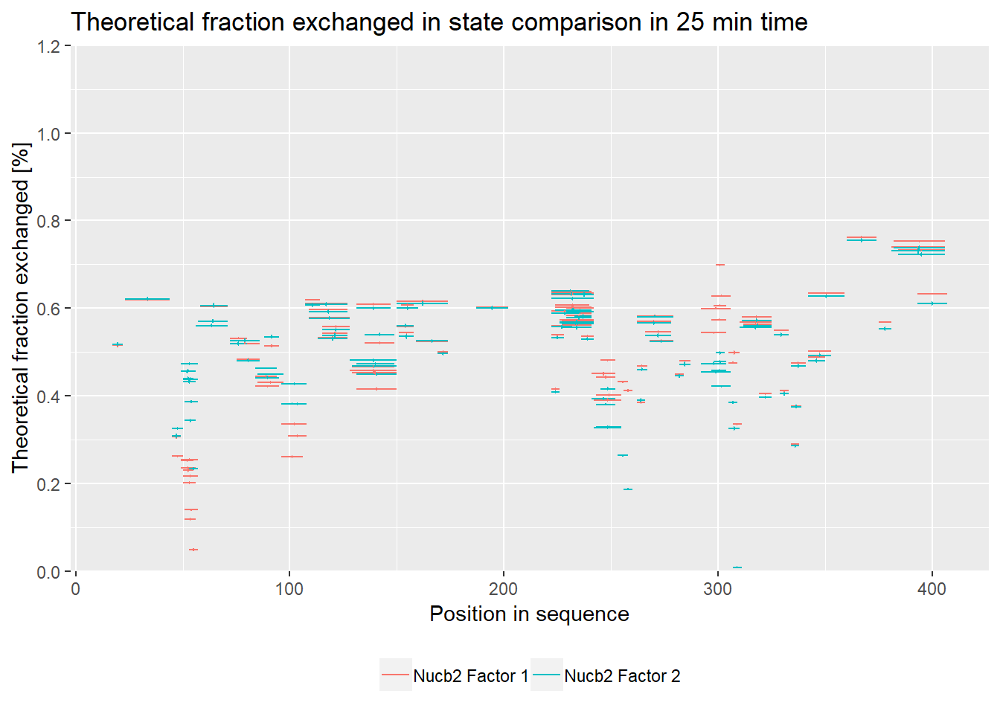
- absolute values:
comparison_plot(calc_dat = calc_dat,
theoretical = TRUE,
relative = FALSE,
state_first = "Nucb2 Factor 1",
state_second = "Nucb2 Factor 2") +
labs(title = "Theoretical fraction exchanged in state comparison in 25 min time")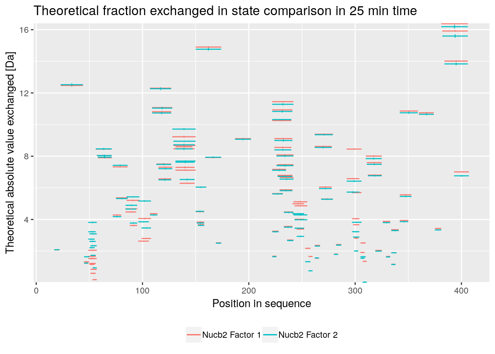
– experimental:
- relative values:
comparison_plot(calc_dat = calc_dat,
theoretical = FALSE,
relative = TRUE,
state_first = "Nucb2 Factor 1",
state_second = "Nucb2 Factor 2") +
labs(title = "Fraction exchanged in state comparison in 25 min time")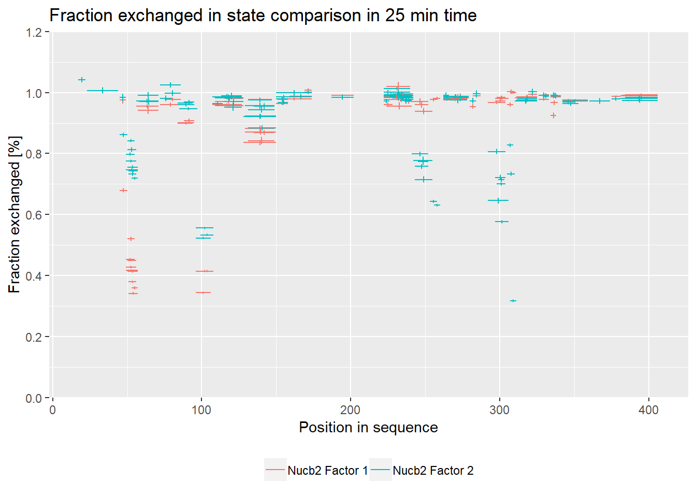
- absolute values:
comparison_plot(calc_dat = calc_dat,
theoretical = FALSE,
relative = FALSE,
state_first = "Nucb2 Factor 1",
state_second = "Nucb2 Factor 2") +
labs(title = "Fraction exchanged in state comparison in 25 min time")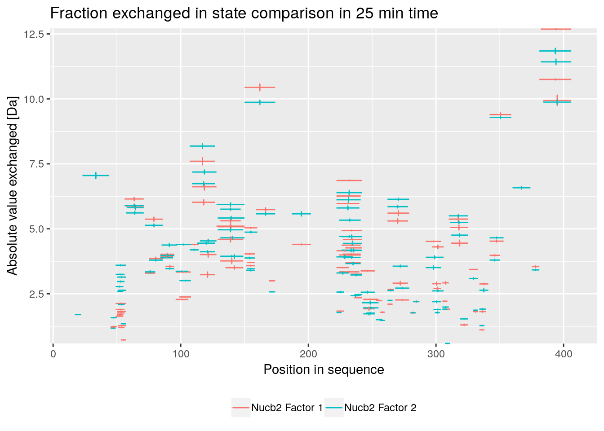
Woods plot
Woods plots show the difference between the deuteration of all peptides in two different states in a specific time point as described by equation 11. Similarly to the comparison plot, HaDeX provides both experimental and theoretical deuteration levels using either relative or absolute values:
– theoretical:
- relative values:
woods_plot(calc_dat = calc_dat,
theoretical = TRUE,
relative = TRUE) +
labs(title = "Theoretical fraction exchanged between states in 25 min time")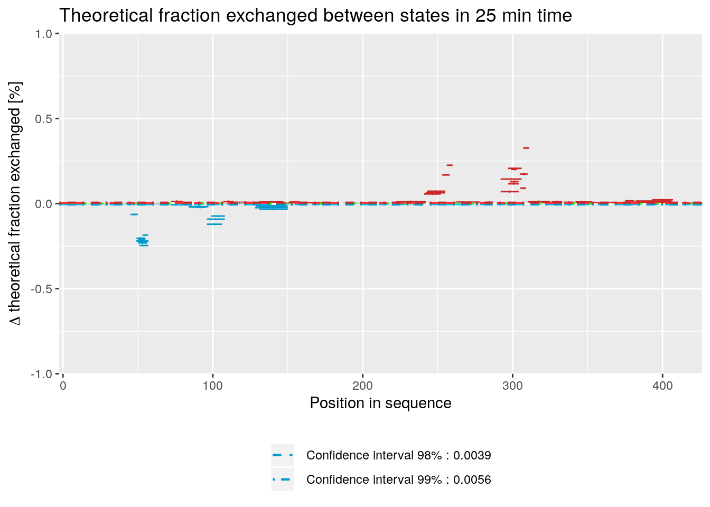
- absolute values:
woods_plot(calc_dat = calc_dat,
theoretical = TRUE,
relative = FALSE) +
labs(title = "Theoretical fraction exchanged between states in 25 min time")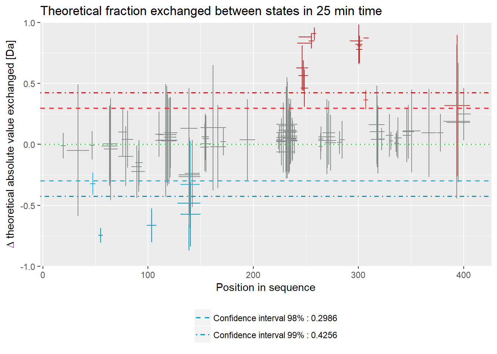
– experimental:
- relative values:
woods_plot(calc_dat = calc_dat,
theoretical = FALSE,
relative = TRUE) +
labs(title = "Theoretical fraction exchanged between states in 25 min time")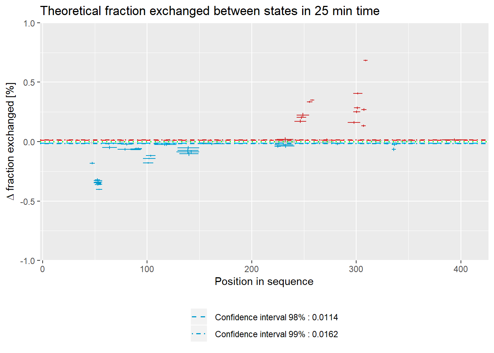
- absolute values:
woods_plot(calc_dat = calc_dat,
theoretical = FALSE,
relative = FALSE) +
labs(title = "Theoretical fraction exchanged between states in 25 min time")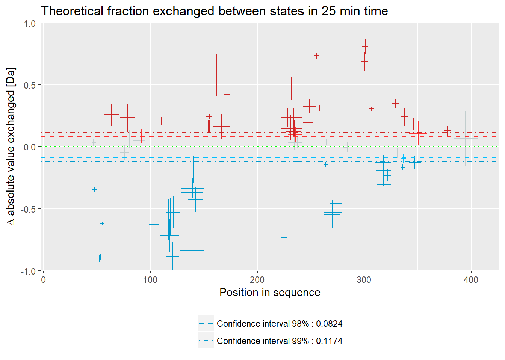
Confidence limit in Woods plot
The function calculate_confidence_limit_values() calculates confidence limit values as it is described elsewhere (Houde, Berkowitz, and Engen 2011).
calculate_confidence_limit_values(calc_dat = calc_dat,
confidence_limit = 0.99,
theoretical = FALSE,
relative = TRUE) ## [1] -0.01619004 0.01619004The function add_stat_dependency() returns data extended by column describing relation of a given peptide with confidence limit.
## # A tibble: 108 x 29
## Sequence Start End Med_Sequence frac_exch_state~ err_frac_exch_s~
## <chr> <int> <int> <dbl> <dbl> <dbl>
## 1 VPIDID 17 22 19.5 NaN NaN
## 2 KTKVKGE~ 23 44 33.5 NaN NaN
## 3 YYDEY 45 49 47 0.975 0.00984
## 4 YYDEYL 45 50 47.5 0.679 0.00549
## 5 YLRQVID 49 55 52 0.453 0.00309
## 6 YLRQVIDV 49 56 52.5 0.428 0.00341
## 7 YLRQVID~ 49 57 53 0.417 0.00271
## 8 LRQVID 50 55 52.5 0.520 0.00660
## 9 LRQVIDV 50 56 53 0.450 0.00248
## 10 LRQVIDVL 50 57 53.5 0.414 0.00346
## # ... with 98 more rows, and 23 more variables: frac_exch_state_2 <dbl>,
## # err_frac_exch_state_2 <dbl>, diff_frac_exch <dbl>,
## # err_frac_exch <dbl>, abs_frac_exch_state_1 <dbl>,
## # err_abs_frac_exch_state_1 <dbl>, abs_frac_exch_state_2 <dbl>,
## # err_abs_frac_exch_state_2 <dbl>, abs_diff_frac_exch <dbl>,
## # err_abs_diff_frac_exch <dbl>, avg_theo_in_time_1 <dbl>,
## # err_avg_theo_in_time_1 <dbl>, avg_theo_in_time_2 <dbl>,
## # err_avg_theo_in_time_2 <dbl>, diff_theo_frac_exch <dbl>,
## # err_diff_theo_frac_exch <dbl>, abs_avg_theo_in_time_1 <dbl>,
## # err_abs_avg_theo_in_time_1 <dbl>, abs_avg_theo_in_time_2 <dbl>,
## # err_abs_avg_theo_in_time_2 <dbl>, abs_diff_theo_frac_exch <dbl>,
## # err_abs_diff_theo_frac_exch <dbl>, valid_at_0.98 <lgl>Additional tools
HaDeX provides additional tools for assessment of experiments.
Peptide coverage
The sequence of protein(s) is reconstructed from the peptides from the input file. Thus, amino acids not covered by peptides are marked as X according to the IUPAC convention. The sequence is reconstructed using the reconstruct_sequence() function.
## [1] "xxxxxxxxxxxxxxxxVPIDIDKTKVKGEGHVEGEKIENPDTGLYYDEYLRQVIDVLETDKHFREKLQTADIEEIKSGKLSRELDLVSHHVRTRLDELKRQEVARLRMLIKAKMDSVQDTGIDHQALLKQFEHLNHQNPDTFEPKDLDMLIKAATSDLENYDKTRHEEFKKYEMxxxxxxxxxxxxLDEEKRQREESKFGEMxxxxxxxxxxxxxxxxxxxKEVWEEADGLDPNEFDPKTFFKLHDVNNDRFLDEQELEAxFTKELEKVYDPKNEEDDMVEMEEERLxxxxHVMNEVDINKDRLVTLEEFLRATEKKEFLEPDSWETLDQQQLFTEDELKEFESHISQQEDELRKKAEELQKQKEELQRQHDQLQAQEQELQQVVKQMEQKKLQQANPPAGPAGELK"Additionally, the coverage of peptides can be presented on a chart using the plot_coverage() and plot_position_frequency() functions.
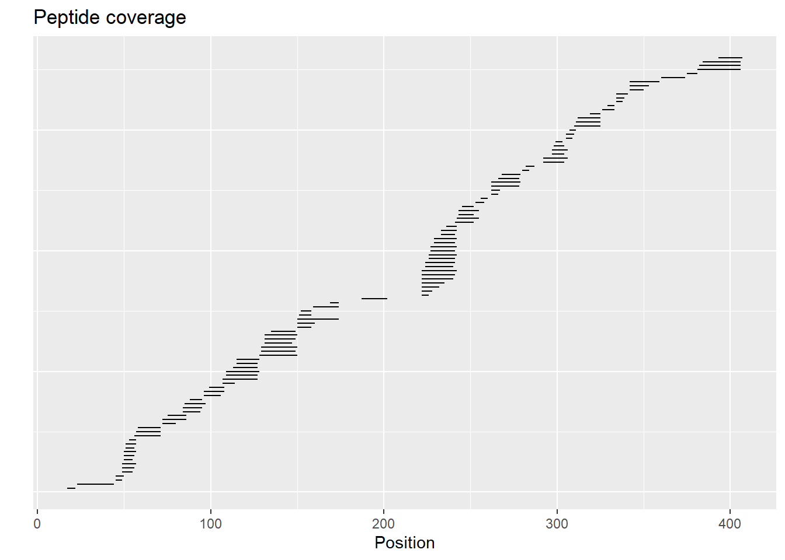
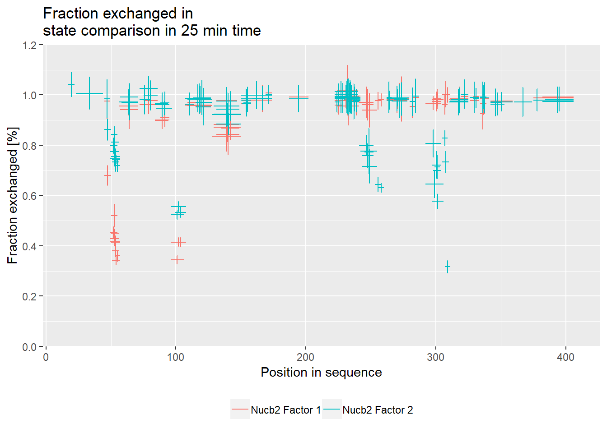
The user can choose which state (or states) should be included in these plots. If this parameter is not provided, the first possible state is chosen. If a given peptide is available in more than one state, it is shown only once.
Quality control
The function quality_control() plots the change in uncertainty of deuteration levels as a function of incubation time. The uncertainty is averaged over all peptides available at a given time point in a selected state. Therefore, the user can detect a time point after which the decrease of the deuteration uncertainty becomes too marginal to prolong the measurements. This function is most useful in case of multiple measurements of the same or very similar proteins, because it helps to optimize the duration of the incubation. The result of this function can be easily visualized.
Example:
result <- quality_control(dat = dat,
state_first = "gg_Nucb2_EDTA",
state_second = "gg_Nucb2_CaCl2",
chosen_time = 25,
in_time = 0.001,
relative = TRUE)ggplot(result[result["time"]>=1,]) +
geom_line(aes(x = time, y = avg_err_state_first, color = "Average error (first state)")) +
geom_line(aes(x = time, y = avg_err_state_second, color = "Average error (second state)")) +
scale_x_log10() +
labs(x = "log(time) [min]", y = "Average uncertainty", title = "Uncertainty change") +
theme_bw(base_size = 11) +
theme(legend.position = "bottom",
legend.title = element_blank())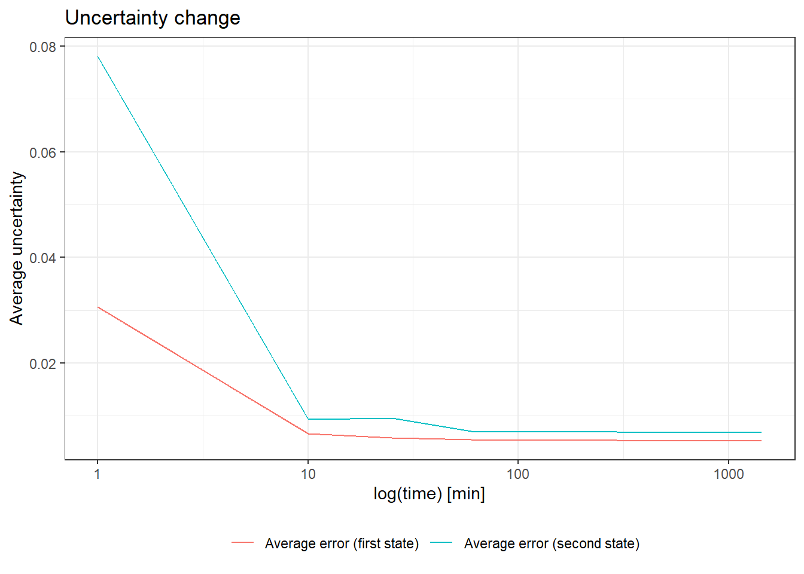
This example is based on relative values. Although HaDeX can provide results in absolute values, be aware that absolute calculations do not encompass time out, so the uncertainty does not change with \(D_{t_{out}}\).
HaDeX Graphical User Interface
The HaDeX Shiny app is launched by the HaDeX_gui() function or available at MS Lab website: http://mslab-ibb.pl/shiny/HaDeX/.
Examples
Example 1: CD160-HVEM
The interaction between HVEM and the CD160 receptor was measured with HDX-MS.
Firstly, we read the input data, exactly as provided by theDynamX 3.0 (Waters Corp.)
library(HaDeX)
# file import
dat_1 <- read_hdx(system.file(package = "HaDeX",
"HaDeX/data/KD_180110_CD160_HVEM.csv"))Then, we reconstruct the protein sequence from the peptides measured during the experiment. We observe tha region from amino acid 107 till amino acid 124 is not covered by any peptide.
## [1] "INITSSASQEGTRLNLICTVWHKKEEAEGFVVFLCKDRSGDCSPETSLKQLRLKRDPGIDGVGEISSQLMFTISQVTPLHSGTYQCCARSQKSGIRLQGHFFSILFxxxxxxxxxxxxxxxxxxFSHNEGTL"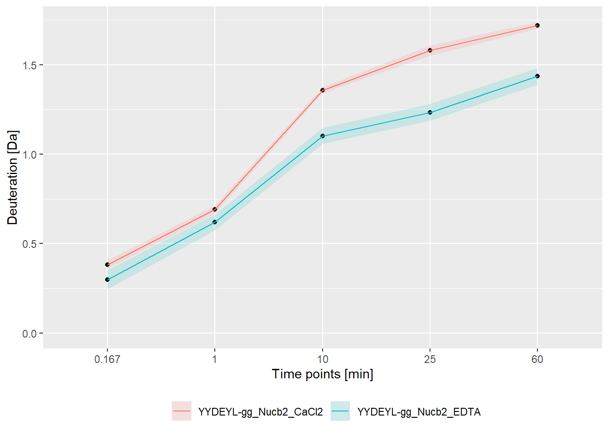
The theoretical plot allows to find regions, which exchange quickly (N-terminus, regions between 30-70 amino acid) and regions, which exchange slowly (peptides 15-24, 95-110 amino acid). We can also see the differences in exchange between two states, indicating regions which changed upon binding with other protein.
# calculate data
calc_dat_1 <- prepare_dataset(dat = dat_1,
in_state_first = "CD160_0.001",
chosen_state_first = "CD160_1",
out_state_first = "CD160_1440",
in_state_second = "CD160_HVEM_0.001",
chosen_state_second = "CD160_HVEM_1",
out_state_second = "CD160_HVEM_1440")
# theoretical comparison plot - relative values
comparison_plot(calc_dat = calc_dat_1,
theoretical = TRUE,
relative = TRUE,
state_first = "CD160",
state_second = "CD160_HVEM")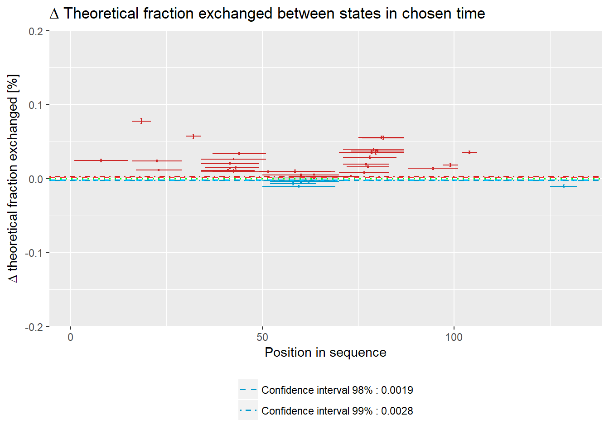
On the experimental plot, there are visible regions, which exchange quickly (N terminal part, regions between 30-70 amino acid) and regions, which exchange slowly (peptides 15-24, 30-35, 95-110 amino acid).
# experimental comparison plot - relative values
comparison_plot(calc_dat = calc_dat_1,
theoretical = FALSE,
relative = TRUE,
state_first = "CD160",
state_second = "CD160_HVEM")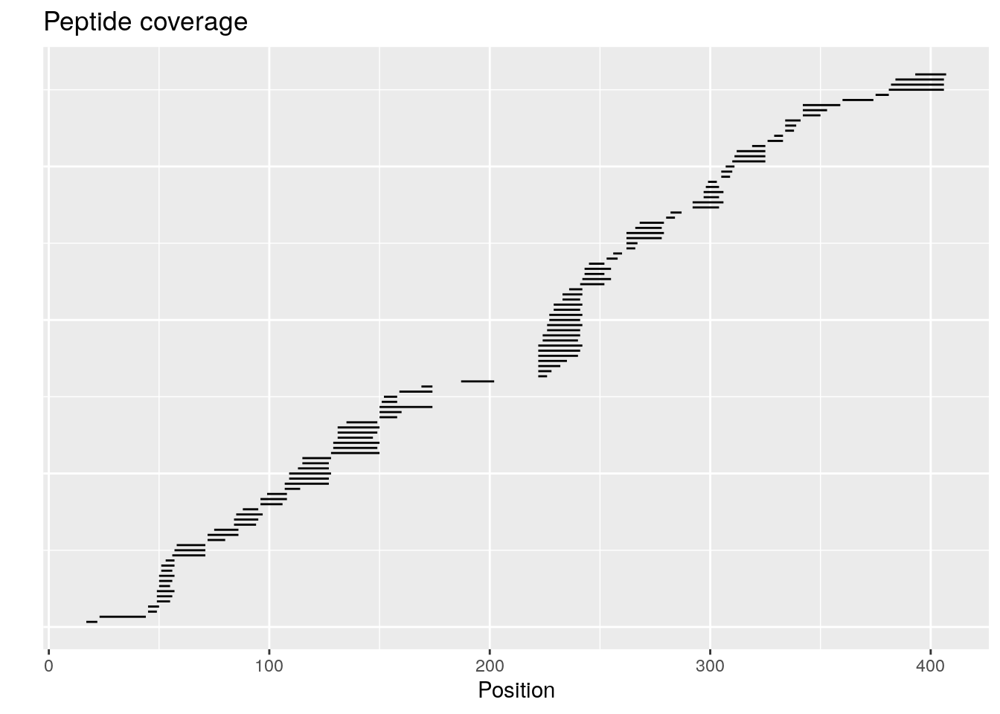
Plots below are equivalent to plots above but in absolute values - for users that prefer those.
# theoretical comparison plot - absolute values
comparison_plot(calc_dat = calc_dat_1,
theoretical = TRUE,
relative = FALSE,
state_first = "CD160",
state_second = "CD160_HVEM")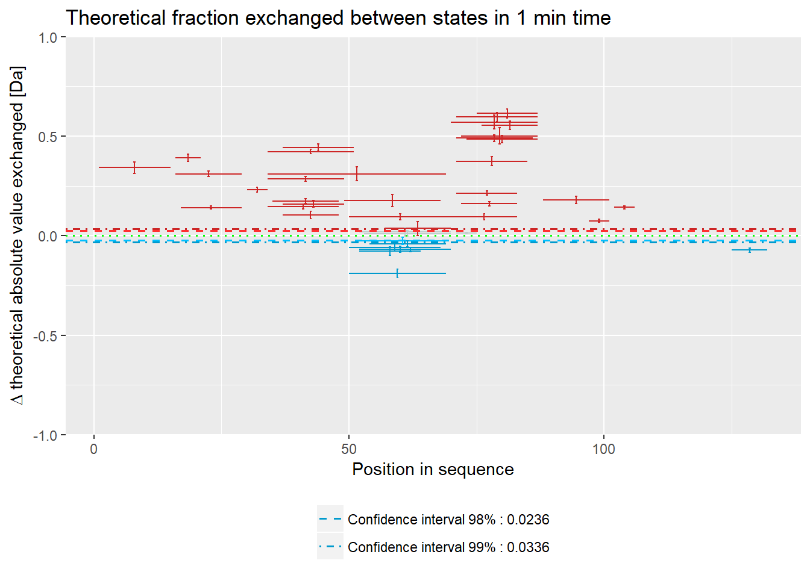
# experimental comparison plot - absolute values
comparison_plot(calc_dat = calc_dat_1,
theoretical = FALSE,
relative = FALSE,
state_first = "CD160",
state_second = "CD160_HVEM")
The plot below shows peptides for which levels of deuteration were significantly lower upon binding with other protein (red) and peptides for which levels of exchange were significantly higher upon binding with other protein (blue). The plot also show peptides in which no significant changes in deuteration between states are visible (grey). The biggest changes on the theoretical plot can be observed in 3 peptides (15-24, 30-35, 75-90).
# theoretical Woods plot - relative values
woods_plot(calc_dat = calc_dat_1,
theoretical = TRUE,
relative = TRUE) +
coord_cartesian(ylim = c(-.2, .2))
The biggest changes on the experimental plot can be observed in 3 peptides (15-24, 110-115).
# experimental Woods plot - relative values
woods_plot(calc_dat = calc_dat_1,
theoretical = FALSE,
relative = TRUE) +
coord_cartesian(ylim = c(-.2, .2))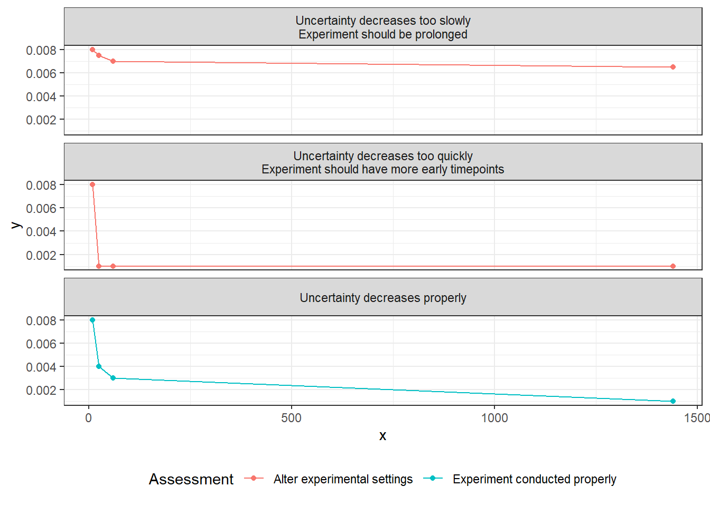
Plot below shows results in absolute values.
# theoretical Woods plot - absolute values
woods_plot(calc_dat = calc_dat_1,
theoretical = TRUE,
relative = FALSE) +
labs(title = "Theoretical fraction exchanged between states in 1 min time") 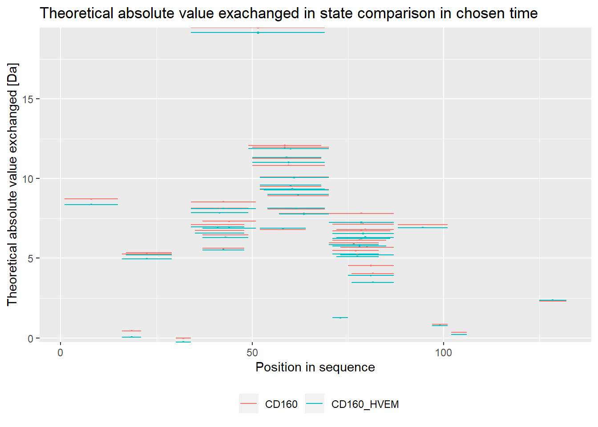
# experimental Woods plot - absolute values
woods_plot(calc_dat = calc_dat_1,
theoretical = FALSE,
relative = FALSE) +
labs(title = "Fraction exchanged between states in 1 min time") 
# quality control - relative values
(result <- quality_control(dat = dat_1,
state_first = "CD160",
state_second = "CD160_HVEM",
chosen_time = 1,
in_time = 0.001))## time avg_err_state_first sd_err_state_first avg_err_state_second
## 1 0.167 0.003919621 0.005116853 0.005738668
## 2 1.000 0.002607188 0.003708500 0.004930354
## 3 5.000 0.002925674 0.002207625 0.003811229
## 4 25.000 0.002086275 0.001636480 0.003375989
## 5 120.000 0.002124354 0.001284390 0.002759393
## 6 1440.000 0.001841383 0.001032972 0.002532581
## sd_err_state_second avg_err_theo_state_first sd_err_theo_state_first
## 1 0.007625134 0.0007087017 0.0005185554
## 2 0.006697768 0.0007087017 0.0005185554
## 3 0.004561764 0.0007087017 0.0005185554
## 4 0.003690424 0.0007087017 0.0005185554
## 5 0.001976257 0.0007087017 0.0005185554
## 6 0.001120593 0.0007087017 0.0005185554
## avg_err_theo_state_second sd_err_theo_state_second avg_diff
## 1 0.001236524 0.0005534176 0.007045439
## 2 0.001236524 0.0005534176 0.005709252
## 3 0.001236524 0.0005534176 0.004920756
## 4 0.001236524 0.0005534176 0.004053767
## 5 0.001236524 0.0005534176 0.003470818
## 6 0.001236524 0.0005534176 0.003200211
## sd_diff avg_theo_diff sd_theo_diff
## 1 0.009107625 0.001476534 0.0006500359
## 2 0.007555534 0.001476534 0.0006500359
## 3 0.004952401 0.001476534 0.0006500359
## 4 0.003949308 0.001476534 0.0006500359
## 5 0.002088545 0.001476534 0.0006500359
## 6 0.001369362 0.001476534 0.0006500359# example quality control visualisation
library(ggplot2)
ggplot(result) +
geom_line(aes(x = time, y = avg_err_state_first, color = "Average error (first state)")) +
geom_line(aes(x = time, y = avg_err_state_second, color = "Average error (second state)")) +
scale_x_log10() +
ylim(0, 0.05) +
labs(x = "log(time) [min]", y = "Average uncertainty", title = "Uncertainty change in out time") +
theme(legend.title = element_blank(),
legend.position = "bottom")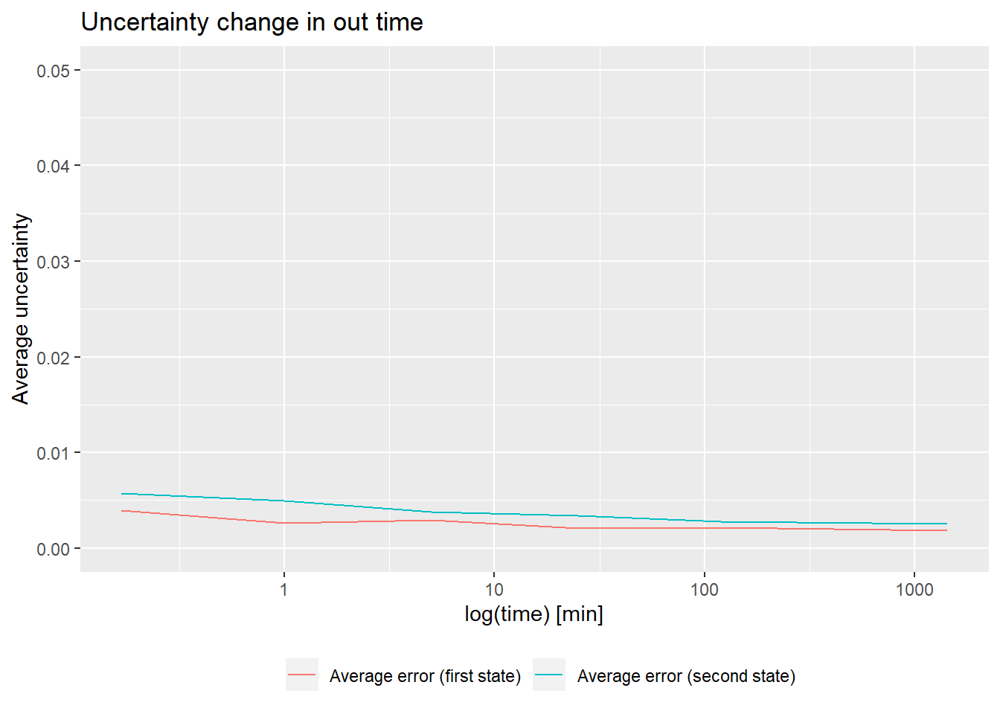
Example workflow 2
library(HaDeX)
# file import
dat_2 <- read_hdx(system.file(package = "HaDeX",
"HaDeX/data/KD_190304_Nucb2_EDTA_CaCl2_test02_clusterdata.csv"))
# protein sequence reconstruction
reconstruct_sequence(dat_2)## [1] "xxxxxxxxxxxxxxxxVPIDIDKTKVKGEGHVEGEKIENPDTGLYYDEYLRQVIDVLETDKHFREKLQTADIEEIKSGKLSRELDLVSHHVRTRLDELKRQEVARLRMLIKAKMDSVQDTGIDHQALLKQFEHLNHQNPDTFEPKDLDMLIKAATSDLENYDKTRHEEFKKYEMxxxxxxxxxxxxLDEEKRQREESKFGEMxxxxxxxxxxxxxxxxxxxKEVWEEADGLDPNEFDPKTFFKLHDVNNDRFLDEQELEAxFTKELEKVYDPKNEEDDMVEMEEERLxxxxHVMNEVDINKDRLVTLEEFLRATEKKEFLEPDSWETLDQQQLFTEDELKEFESHISQQEDELRKKAEELQKQKEELQRQHDQLQAQEQELQQVVKQMEQKKLQQANPPAGPAGELK"# calculate data
calc_dat_2 <- prepare_dataset(dat = dat_2,
in_state_first = "gg_Nucb2_EDTA_0.001",
chosen_state_first = "gg_Nucb2_EDTA_25",
out_state_first = "gg_Nucb2_EDTA_1440",
in_state_second = "gg_Nucb2_CaCl2_0.001",
chosen_state_second = "gg_Nucb2_CaCl2_25",
out_state_second = "gg_Nucb2_CaCl2_1440")
# theoretical comparison plot - relative values
comparison_plot(calc_dat = calc_dat_2,
theoretical = TRUE,
relative = TRUE,
state_first = "Nucb2 Factor 1",
state_second = "Nucb2 Factor 2") +
labs(title = "Theoretical fraction exchanged in \nstate comparison in 25 min time")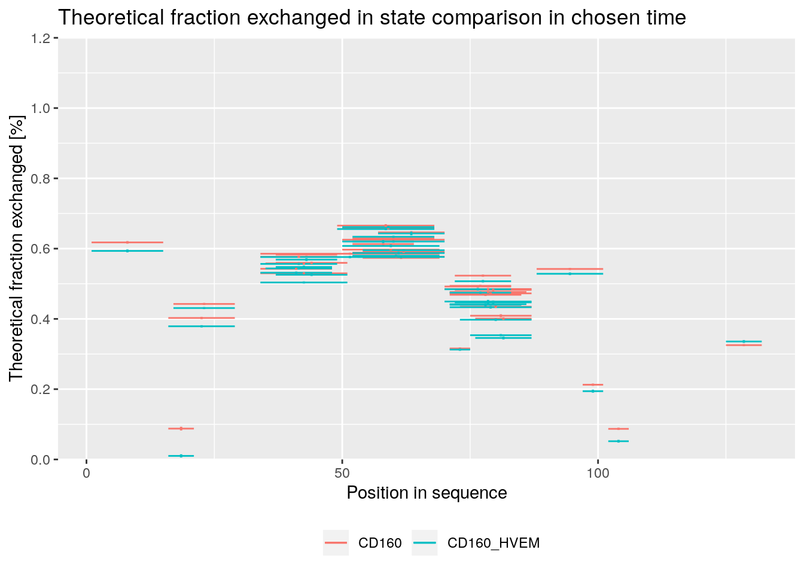
# experimental comparison plot - relative values
comparison_plot(calc_dat = calc_dat_2,
theoretical = FALSE,
relative = TRUE,
state_first = "Nucb2 Factor 1",
state_second = "Nucb2 Factor 2") +
labs(title = "Fraction exchanged in \nstate comparison in 25 min time")
# theoretical comparison plot - absolute values
comparison_plot(calc_dat = calc_dat_2,
theoretical = TRUE,
relative = FALSE,
state_first = "Nucb2 Factor 1",
state_second = "Nucb2 Factor 2") +
labs(title = "Theoretical fraction exchanged in \nstate comparison in 25 min time")
# experimental comparison plot - absolute values
comparison_plot(calc_dat = calc_dat_2,
theoretical = FALSE,
relative = FALSE,
state_first = "Nucb2 Factor 1",
state_second = "Nucb2 Factor 2") +
labs(title = "Fraction exchanged in \nstate comparison in 25 min time")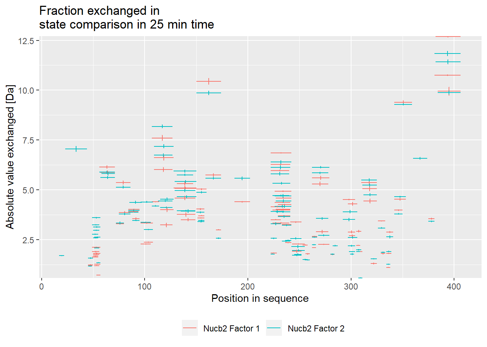
# theoretical Woods plot - relative values
woods_plot(calc_dat = calc_dat_2,
theoretical = TRUE,
relative = TRUE) +
labs(title = "Theoretical fraction exchanged between states in 25 min time") +
coord_cartesian(ylim = c(-.5, .7))
# experimental Woods plot - relative values
woods_plot(calc_dat = calc_dat_2,
theoretical = FALSE,
relative = TRUE) +
labs(title = "Fraction exchanged between states in 25 min time") +
coord_cartesian(ylim = c(-.5, .7))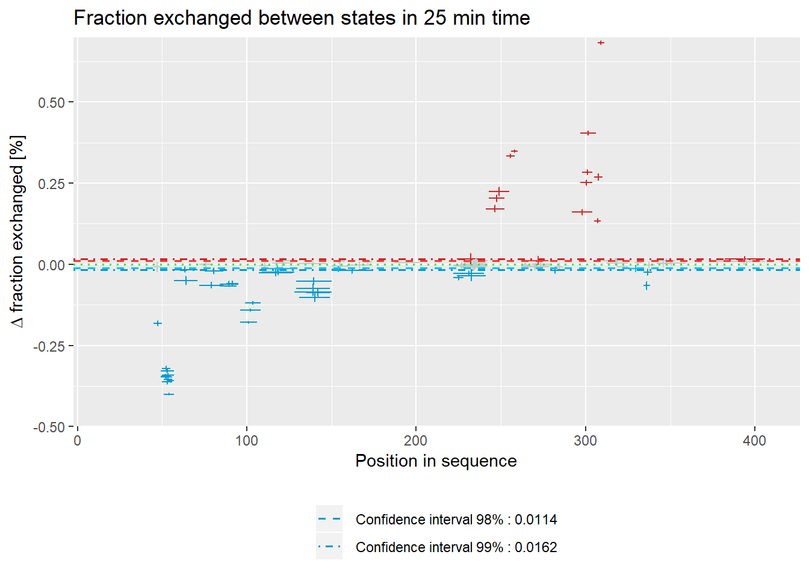
# theoretical Woods plot - absolute values
woods_plot(calc_dat = calc_dat_2,
theoretical = TRUE,
relative = FALSE) +
labs(title = "Theoretical fraction exchanged between states in 25 min time") 
# experimental Woods plot - absolute values
woods_plot(calc_dat = calc_dat_2,
theoretical = FALSE,
relative = FALSE) +
labs(title = "Fraction exchanged between states in 25 min time") 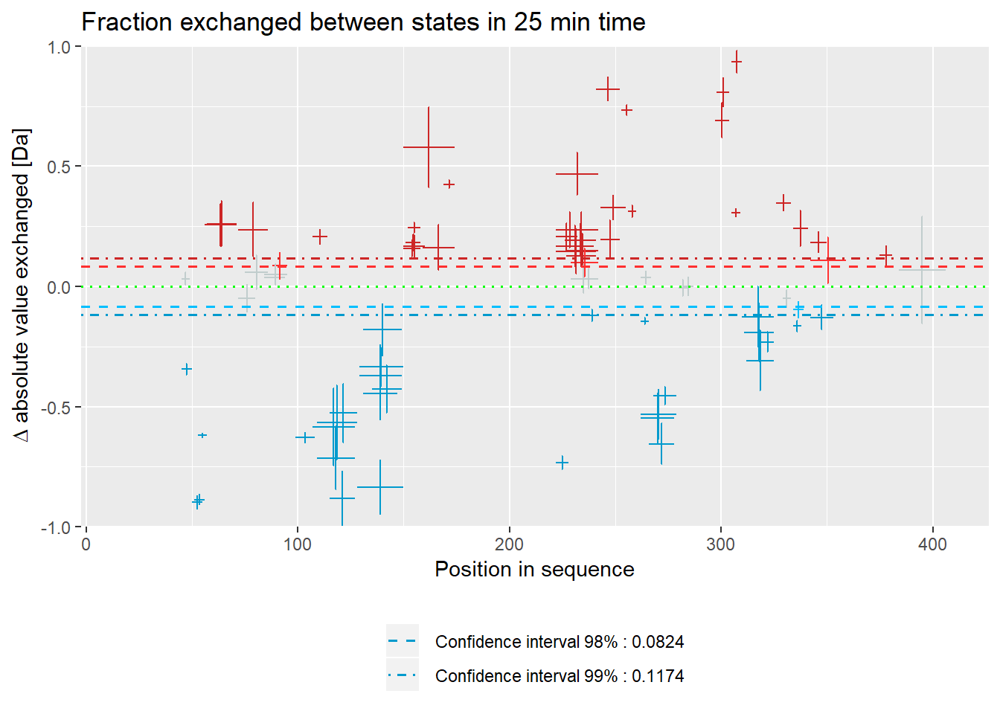
# quality control
(result <- quality_control(dat = dat_2,
state_first = "gg_Nucb2_EDTA",
state_second = "gg_Nucb2_CaCl2",
chosen_time = 25,
in_time = 0.001))## time avg_err_state_first sd_err_state_first avg_err_state_second
## 1 0.167 0.158083662 0.374221748 0.808330769
## 2 1.000 0.030622838 0.060927377 0.078091161
## 3 10.000 0.006651472 0.005621178 0.009344373
## 4 25.000 0.005796828 0.003283214 0.009559405
## 5 60.000 0.005530984 0.002672025 0.007094412
## 6 1440.000 0.005308684 0.002471285 0.006814869
## sd_err_state_second avg_err_theo_state_first sd_err_theo_state_first
## 1 2.551580562 0.001396896 0.0006199273
## 2 0.146589091 0.001396896 0.0006199273
## 3 0.005126022 0.001396896 0.0006199273
## 4 0.002774018 0.001396896 0.0006199273
## 5 0.002096056 0.001396896 0.0006199273
## 6 0.002019402 0.001396896 0.0006199273
## avg_err_theo_state_second sd_err_theo_state_second avg_diff
## 1 0.002539802 0.0007520063 0.563316031
## 2 0.002539802 0.0007520063 0.080138397
## 3 0.002539802 0.0007520063 0.011699777
## 4 0.002539802 0.0007520063 0.011419694
## 5 0.002539802 0.0007520063 0.009074865
## 6 0.002539802 0.0007520063 0.008631836
## sd_diff avg_theo_diff sd_theo_diff
## 1 1.248992873 0.002982639 0.0006774071
## 2 0.138961471 0.002982639 0.0006774071
## 3 0.006096753 0.002982639 0.0006774071
## 4 0.002828424 0.002982639 0.0006774071
## 5 0.002499717 0.002982639 0.0006774071
## 6 0.002732523 0.002982639 0.0006774071# example quality control visualisation - relative values
library(ggplot2)
ggplot(result[result["time"]>=1,]) +
geom_line(aes(x = time, y = avg_err_state_first, color = "Average error (first state)")) +
geom_line(aes(x = time, y = avg_err_state_second, color = "Average error (second state)")) +
scale_x_log10() +
labs(x = "log(time) [min]", y = "Average uncertainty", title = "Uncertainty change") +
theme(legend.position = "bottom",
legend.title = element_blank())
References
Houde, Damian, Steven A. Berkowitz, and John R. Engen. 2011. “The Utility of Hydrogen/Deuterium Exchange Mass Spectrometry in Biopharmaceutical Comparability Studies.” Journal of Pharmaceutical Sciences 100 (6): 2071–86. https://doi.org/10.1002/jps.22432.
Hourdel, Véronique, Stevenn Volant, Darragh P. O’Brien, Alexandre Chenal, Julia Chamot-Rooke, Marie-Agnès Dillies, and Sébastien Brier. 2016. “MEMHDX: An Interactive Tool to Expedite the Statistical Validation and Visualization of Large HDX-MS Datasets.” Bioinformatics 32 (22): 3413–9. https://doi.org/10.1093/bioinformatics/btw420.
Joint Committee for Guides in Metrology. 2008. “JCGM 100: Evaluation of Measurement Data - Guide to the Expression of Uncertainty in Measurement.” JCGM.
Lau, Andy M. C., Zainab Ahdash, Chloe Martens, and Argyris Politis. 2019. “Deuteros: Software for Rapid Analysis and Visualization of Data from Differential Hydrogen Deuterium Exchange-Mass Spectrometry.” Bioinformatics (Oxford, England), January. https://doi.org/10.1093/bioinformatics/btz022.
Pascal, Bruce D., Scooter Willis, Janelle L. Lauer, Rachelle R. Landgraf, Graham M. West, David Marciano, Scott Novick, Devrishi Goswami, Michael J. Chalmers, and Patrick R. Griffin. 2012. “HDX Workbench: Software for the Analysis of H/D Exchange MS Data.” Journal of the American Society for Mass Spectrometry 23 (9): 1512–21. https://doi.org/10.1007/s13361-012-0419-6.